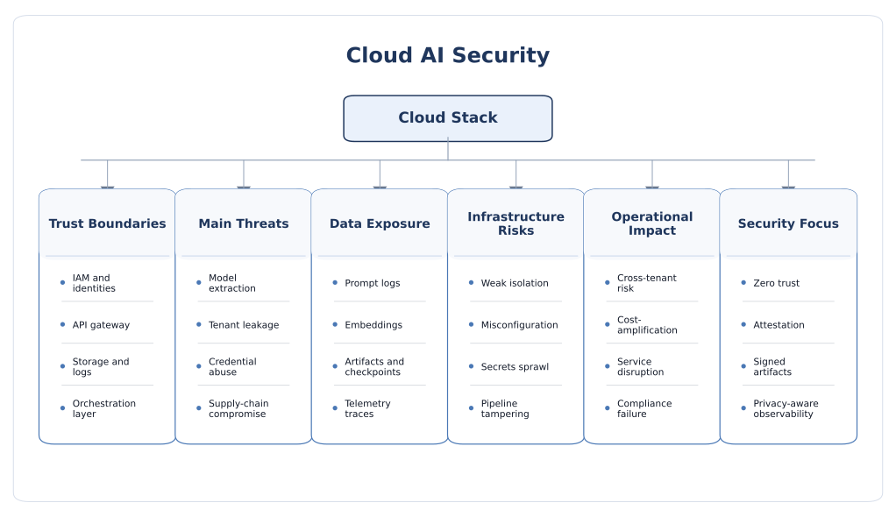

Cloud AI Security
Cloud AI security is shaped by remote model access, shared infrastructure, large-scale orchestration, centralized data pipelines, tenant isolation, identity boundaries, logging, storage, and the operational glue that keeps AI services running in production. In the cloud, security is not only about the model. It is about the entire service stack that surrounds the model at scale.
Why cloud deployment changes the AI security problem
Cloud deployment makes advanced AI broadly accessible because it centralizes compute, storage, model serving, observability, and orchestration. That centralization is powerful, but it also concentrates risk. A cloud AI service typically exposes remote APIs, uses object storage and vector databases, relies on CI/CD and container orchestration, keeps logs and traces, integrates with identity systems, and often shares physical infrastructure with other tenants. This means the real attack surface is much larger than the model endpoint that users see.
A practical way to think about cloud AI security is to separate model security from service security. Model security asks whether the model can be extracted, manipulated, poisoned, or made to leak information. Service security asks whether the surrounding cloud stack—identity, storage, network paths, orchestration, inference gateways, secrets, logging, and tenant isolation—can be exploited to reach the model or the data around it. In production, failures often come from their interaction.
Why the cloud is different from local deployment
- Remote access is the default: cloud AI is usually reachable through APIs, SDKs, gateways, or internal service meshes.
- Shared infrastructure is common: compute nodes, accelerators, storage, and orchestration layers may be multi-tenant.
- Operational scale is high: autoscaling, queuing, retries, tracing, and distributed pipelines create more trust boundaries.
- Data gravity matters: training corpora, prompts, embeddings, artifacts, and logs are often centralized in cloud storage.
- Control is distributed: responsibility is shared across cloud provider, model provider, platform team, and application owner.
Cloud-specific security objectives
- Tenant isolation: one customer’s data, prompts, and workloads must not leak into another customer’s environment.
- Identity-centric control: every model, dataset, service, tool, and operator action should be bound to explicit authorization.
- Data governance: prompts, retrieved content, embeddings, model artifacts, and logs should be stored and retained intentionally.
- Service resilience: the system should withstand extraction pressure, abusive prompts, token flooding, and cost-amplification attacks.
- Operational auditability: incidents should be traceable across model calls, tools, infrastructure events, and policy changes.
- Supply-chain integrity: base models, containers, weights, packages, and deployment manifests should be trusted and versioned.
Where cloud AI security becomes most visible
- Hosted LLM APIs and inference endpoints.
- Enterprise RAG platforms with object storage and vector databases.
- Managed training pipelines and batch fine-tuning jobs.
- Agent platforms connected to SaaS tools, email, ticketing, or databases.
- Multi-user copilots embedded inside business workflows.
- Model-serving platforms built on Kubernetes and containerized microservices.

Threat model and cloud-specific attack surface
A cloud AI threat model should state who the attacker is, which layer they can touch, and whether they aim at the model, the platform, or the data around it. Cloud attackers are often remote and economically motivated, but not always. They may be external API abusers, malicious tenants, compromised developers, insiders with excessive permissions, supply-chain adversaries, or attackers who exploit ordinary cloud weaknesses to reach AI-specific assets.
Attacker positions
- Remote API attacker: interacts with public or semi-public inference endpoints to extract behavior, leak data, or raise cost.
- Tenant-level attacker: abuses multi-tenant hosting assumptions, noisy-neighbor conditions, or weak isolation boundaries.
- Application-layer attacker: exploits prompts, retrieval, plugins, web hooks, or orchestration code wrapped around the model.
- Credential attacker: steals cloud tokens, service accounts, API keys, or workload identities to access AI resources.
- Supply-chain attacker: compromises models, containers, packages, CI pipelines, infrastructure-as-code, or deployment manifests.
- Insider or privileged operator: misuses logging access, model management rights, storage buckets, or debugging interfaces.
Shared-responsibility reality
In cloud AI, responsibility is rarely held by one actor. The infrastructure provider may secure the physical facilities and core platform, but the customer or application owner still controls IAM choices, data placement, secrets, retrieval configuration, storage policy, prompt design, and tool permissions. Security failure often occurs in the seams between those roles rather than inside one clearly owned component.
Major cloud AI threat classes
1. API abuse, model extraction, and query-scale reconnaissance
Cloud AI is typically exposed through APIs, making query-based attack surfaces central. Attackers can send repeated requests to approximate model behavior, infer hidden prompts, recover policy boundaries, probe moderation thresholds, or build substitute models. Even when full extraction is not achieved, repeated querying can reveal system capability, weakness, or confidential business logic.
- High-risk signals include unrestricted query volume, rich probability outputs, verbose error messages, and weak tenant-level quotas.
- Reconnaissance often begins with harmless-looking prompts to map refusals, token limits, tool availability, and hidden wrappers.
- Cost abuse and extraction can occur together: the attacker learns from the service while forcing the defender to pay for the interaction.
2. Identity, access, and secret-management failures
Many cloud AI incidents are ordinary cloud-security failures with AI consequences. Overprivileged service accounts, leaked API keys, misconfigured roles, long-lived secrets, or badly scoped workload identities can expose model endpoints, storage buckets, training artifacts, vector databases, or management interfaces. In AI deployments, these mistakes are amplified because one credential may unlock multiple sensitive assets.
- Compromised service identities may access prompts, embeddings, logs, fine-tuning jobs, or downstream connectors.
- Shared secrets across services make blast radius large and root-cause analysis harder.
- Temporary tokens and attested workload identity are safer than static credentials embedded in code or configuration.
3. Storage, logging, and data-governance leakage
Cloud AI systems often store more data than teams realize: prompt logs, traces, user uploads, retrieved documents, embeddings, output caches, evaluation artifacts, and debug records. These may reside in object storage, observability tools, databases, or vendor dashboards. Leakage may therefore occur outside the model response path, through retention policy mistakes, logging verbosity, insecure exports, or insufficient access segmentation between teams.
- Prompt and response leakage: sensitive content appears in logs, traces, support dashboards, or analytics exports.
- Embedding leakage: vector stores can indirectly expose proprietary knowledge if access is poorly controlled.
- Artifact leakage: model checkpoints, adapters, tokenizer files, and evaluation outputs may be unintentionally exposed.
4. Multi-tenant isolation and cross-boundary risk
Cloud AI often runs on shared clusters, shared accelerators, shared orchestration layers, or multi-tenant control planes. Even when direct cross-tenant compromise is rare, weak isolation can still cause leakage through misrouting, cache confusion, metadata exposure, shared indexes, or insufficient namespace and identity separation. As AI workloads increasingly rely on expensive shared accelerators, the importance of strong isolation grows further.
- Isolation issues can arise at the network, container, runtime, storage, scheduler, or accelerator-assignment level.
- Shared vector stores or retrieval services can accidentally mix authorization domains.
- Operational dashboards may expose metadata about workloads, job names, or usage patterns across teams or tenants.
5. Orchestration, RAG, and glue-code compromise
In practice, the model is only one component in a broader cloud workflow. Orchestration services assemble prompts, fetch documents, normalize tool outputs, handle state, and invoke downstream APIs. This glue code often becomes the weakest point because it evolves rapidly, is business-specific, and may not receive the same security review as core infrastructure. Prompt injection, retrieval poisoning, and insecure output handling can therefore become cloud AI incidents even when the hosting layer itself is correctly configured.
6. Model and software supply-chain compromise
Cloud AI services depend on many upstream artifacts: pretrained weights, container images, libraries, tokenizer assets, evaluation scripts, infrastructure-as-code, plugin connectors, and CI/CD pipelines. A supply-chain compromise can alter behavior long before the model is queried. The cloud amplifies this risk because artifacts are reused, replicated, and deployed rapidly across environments.
- Malicious or low-integrity checkpoints can introduce hidden behaviors or unsafe defaults.
- Compromised containers and build pipelines can leak secrets or tamper with model-serving logic.
- Untracked prompt-template or policy changes can materially alter security posture without obvious infrastructure alerts.
7. Training-pipeline and MLOps compromise
Managed cloud training pipelines bring datasets, notebooks, feature stores, schedulers, experiment trackers, and artifact registries into scope. Attackers may poison data, alter evaluation jobs, replace model artifacts, tamper with deployment promotion logic, or exploit weak separation between development, staging, and production AI assets. MLOps pipelines are attractive because they concentrate both privileges and trust.
- Model registries and artifact stores become high-value targets.
- Evaluation pipelines can be manipulated to falsely signal readiness or safety.
- Notebook and job environments often accumulate overly broad permissions over time.
8. Cost-amplification and availability attacks
Cloud AI systems are highly susceptible to asymmetric economic attacks. Attackers can trigger long contexts, repeated generation, expensive retrieval, recursive tool execution, massive embedding requests, or bursty inference traffic. The result may be latency spikes, service degradation, quota exhaustion, or large unexpected bills even without a conventional data breach.
- Autoscaling reduces some availability issues but can worsen cost exposure.
- Queueing and retries can unintentionally amplify attacker traffic.
- Billing, throttling, and anomaly detection are therefore part of the security boundary.
9. Confidentiality of data in use
Cloud controls traditionally protect data at rest and in transit, but AI workloads also raise concern about data in use during training or inference. Organizations handling sensitive prompts, regulated data, healthcare information, or proprietary model weights increasingly care about execution confidentiality, attestation, and whether cloud operators or co-resident workloads could observe sensitive computation paths.
10. Governance drift across fast-moving cloud stacks
Cloud AI deployments change quickly: prompts evolve, model versions rotate, containers are rebuilt, connectors are added, and new data sources are indexed. This velocity creates a governance problem. Security assumptions that were valid last month may quietly fail after a seemingly small pipeline or policy change.
Countermeasures and secure design principles
Strong cloud AI defense comes from combining cloud-native security discipline with AI-specific controls. The goal is not merely to harden one endpoint. It is to make identities explicit, reduce blast radius, verify what is deployed, control data movement, and continuously observe the behavior of both models and the infrastructure around them.
1. Zero-trust and identity-first architecture
- Authenticate and authorize every access to models, data stores, orchestration services, and management APIs.
- Use short-lived credentials, workload identity, and service-to-service authentication rather than shared static secrets.
- Apply least privilege at human, service, tool, and pipeline levels.
- Separate development, evaluation, staging, and production identities and permissions.
- Continuously re-evaluate trust instead of assuming safety based on network location alone.
This matters especially in cloud AI because network perimeter assumptions break down quickly once models, retrievers, agents, pipelines, and storage are distributed across many services.
2. Strong tenant and workload isolation
- Use namespace, network, and storage isolation for different teams, customers, and environments.
- Prevent shared indexes, caches, or logs from crossing authorization boundaries.
- Restrict scheduler placement and resource sharing for sensitive workloads when required.
- Prefer dedicated or stronger-isolation configurations for high-value training and inference services.
- Harden Kubernetes and cluster admission paths, not only the application container itself.
3. API, gateway, and inference-endpoint protection
- Enforce rate limits, quotas, anomaly detection, and per-tenant traffic policies.
- Reduce unnecessary output detail such as raw confidences, verbose errors, or debugging metadata.
- Use API gateways, schema validation, and policy enforcement before requests reach the model runtime.
- Track extraction-like query patterns, repeated boundary probing, and cost-amplifying request shapes.
- Separate internal admin endpoints from customer-facing inference paths.
4. Data governance and storage minimization
- Classify prompts, documents, embeddings, checkpoints, and logs by sensitivity.
- Minimize retention of raw prompts, intermediate traces, and debugging artifacts.
- Encrypt data at rest and in transit, and control access to object stores, model registries, and vector databases.
- Segment logging and analytics access so operators do not automatically see sensitive customer content.
- Use explicit lifecycle rules for backup, archival, export, and deletion of AI-related artifacts.
5. Secrets management and connector control
- Store credentials in dedicated secrets-management systems rather than code, prompts, or environment files.
- Rotate secrets regularly and on incident signals.
- Bind connector access to narrow roles and specific use cases.
- Scan builds, repositories, prompts, and logs for exposed secrets.
- Make external connectors opt-in and auditable rather than implicitly available to the entire AI platform.
6. Secure MLOps and supply-chain integrity
- Sign and verify model artifacts, container images, and deployment packages where possible.
- Version-control prompts, policy files, evaluation configurations, and infrastructure-as-code.
- Use admission and CI/CD checks before models, containers, or retrievers are promoted to production.
- Track provenance for base models, fine-tuning data, adapters, and benchmark results.
- Separate who can train, who can approve, who can deploy, and who can observe production behavior.
7. Retrieval and application-layer hardening
- Treat retrieved cloud content as untrusted unless explicitly validated.
- Apply authorization filters before retrieved content enters prompts.
- Isolate high-privilege system instructions from user and document content.
- Validate model outputs before they are passed to tools, databases, or downstream services.
- Use human approval or deterministic policy checks for consequential actions.
8. Confidential computing and attested execution
For sensitive deployments, organizations increasingly consider confidential computing to protect data in use during training or inference. Hardware-backed trusted execution environments and attestation can strengthen trust assumptions around remote execution, especially when sensitive data or proprietary models must be processed in shared cloud environments.
- Use confidential-computing-capable infrastructure when execution confidentiality is a major requirement.
- Bind secrets release and workflow approval to attestation where feasible.
- Understand the performance, compatibility, and operational trade-offs rather than assuming TEEs are a universal fix.
9. Monitoring, forensics, and incident response
- Correlate infrastructure logs, IAM events, model traces, retrieval events, and tool invocations.
- Detect unusual query bursts, repeated refusals, high-cost sessions, extraction patterns, or cross-tenant anomalies.
- Prepare rollback paths for model versions, prompts, indexes, containers, and policy changes.
- Retain enough evidence for investigation while avoiding unnecessary retention of sensitive user content.
- Exercise incident playbooks that include both cloud-security and AI-specific failure modes.
Open research challenges and future directions
Cloud AI security is moving quickly, but assurance still lags behind deployment velocity. Teams can launch powerful AI services in days, while rigorous evaluation of isolation, provenance, privacy, and service composition still takes much longer. The major challenge is therefore not only better controls, but better assurance under rapid change.
1. Assurance across layered ownership remains weak
Cloud AI systems are built across provider, model platform, application, and customer layers. Shared responsibility is well known in principle, but still difficult to verify in practice. Organizations need clearer ways to express which control is owned by whom and how evidence flows across those layers.
2. Strong multi-tenant isolation for AI accelerators is still evolving
As AI workloads rely more on shared accelerators and specialized runtimes, the research problem of secure isolation grows more important. The community still needs stronger practical assurance around co-residency risk, scheduling separation, memory isolation, and performance side effects in shared AI infrastructure.
3. Data in use remains a difficult trust boundary
Encryption at rest and in transit is mature, but protection of data and model weights during live execution remains harder. Confidential computing is promising, yet deployment patterns, attestation workflows, debugging models, and performance costs are still active engineering questions.
4. Logging and observability create a paradox
Cloud AI needs detailed telemetry for safety, abuse detection, and debugging, but that same telemetry may contain user data, proprietary prompts, retrieved documents, or tool outputs. Better privacy-aware observability designs are needed so teams can investigate incidents without over-collecting sensitive content.
5. MLOps assurance is still immature
CI/CD pipelines for AI now include datasets, prompts, benchmark results, adapters, containers, vector stores, and policy files. We still lack mature, widely adopted assurance practices that cover the entire lifecycle rather than only the final deployed image.
6. Cloud cost and security are tightly coupled
In AI services, cost anomalies can signal active attack, broken routing, extraction pressure, or denial-of-wallet behavior. Future security frameworks should treat billing behavior, scaling patterns, and quota abuse as first-class security signals rather than separate FinOps concerns.
7. Retrieval and storage authorization remain easy to get wrong
Enterprise cloud AI frequently connects LLMs to large internal knowledge stores. The challenge is not only preventing external leakage, but ensuring that retrieval, caching, and summarization preserve the original authorization semantics of the underlying documents.
8. Cloud AI benchmarks lag behind real deployments
Many evaluations still assume a single endpoint and a single attacker. Real systems are multi-stage, stateful, multilingual, monitored, containerized, and interconnected with storage, identity, and SaaS platforms. Better cloud-realistic benchmarks are needed for query abuse, retrieval compromise, orchestration risk, and cross-layer incident response.
9. Governance drift is continuous
The cloud encourages rapid experimentation, but prompts, retrievers, connectors, model versions, and IAM policies can all drift over time. A major future direction is continuous assurance: proving not only that the system was secure at deployment, but that it remains acceptably secure after many small operational changes.
10. Future direction
- Evidence-driven control mapping across provider, platform, application, and customer layers.
- Stronger attestation and confidential-computing workflows for sensitive AI inference and training.
- Cloud-realistic benchmarks for extraction, tenant isolation, cost abuse, and orchestration compromise.
- Privacy-aware observability and forensic methods for AI services.
- Security architectures that connect IAM, storage policy, retrievers, tools, and models as one governed system.
- Cross-layer research connecting cloud risks with hardware trust, edge deployment, and physical-world AI consequences.
Selected readings and frameworks
The references below are strong starting points for readers who want cloud-native and AI-specific perspectives together.
- NIST AI Risk Management Framework (AI RMF)
- NIST AI 600-1: Generative AI Profile
- NIST AI 100-2: Adversarial Machine Learning Taxonomy and Terminology
- NIST SP 800-207: Zero Trust Architecture
- NIST Cybersecurity Framework (CSF) 2.0
- OWASP Top 10 for LLM Applications 2025
- MITRE ATLAS
- MITRE SAFE-AI: A Framework for Securing AI-Enabled Systems
- Cloud Security Alliance: AI Controls Matrix (AICM)
- Kubernetes Security Overview
- Kubernetes: Securing a Cluster
- Confidential Computing for Cloud Workloads